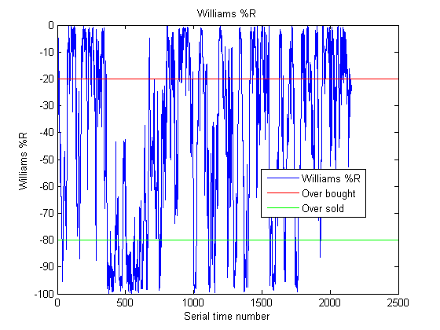
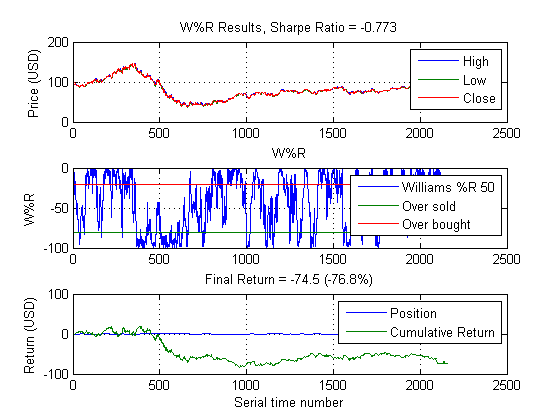
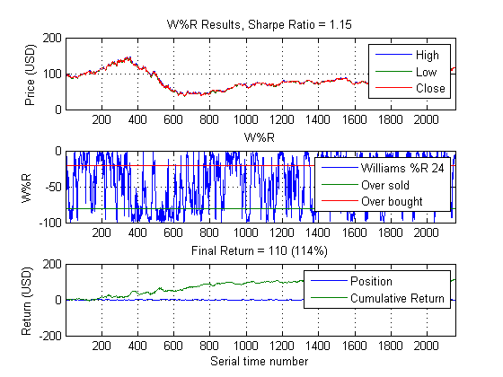
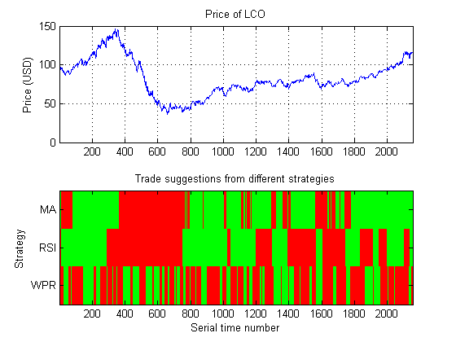
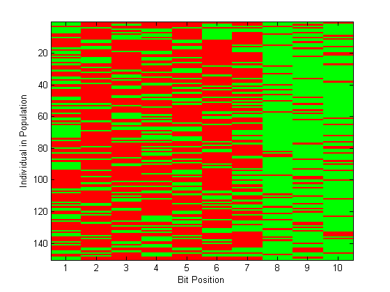
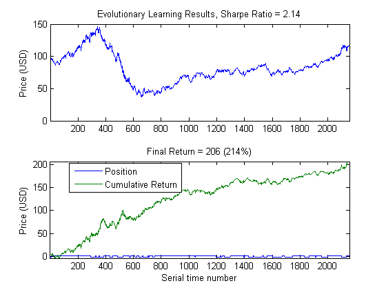

Algorithmic Trading with MATLAB: Rule Selection
Previously, we developed a back testing framework to calibrate a simple trading strategy to intraday data. In this demo we'll use extend the approach to three signals: MA, RSI, and Williams %R.
Copyright 2010-2012, The MathWorks, Inc. All rights reserved.
Contents
Load data
step = 153; % minute intervals annualScaling = sqrt(250*60*7/step); cost = 0.01; % Rather than forcing the customer to define and populate a database, we % will instead read from a prepared data file. If you wish, you may write % the data from this file to a database of your choosing and adapt the % GETMINUTEDATAFROMDB command to connect to and read from it. % LCO = getMinuteDataFromDB('LCO'); load oilData LCO = double(brent); clearvars -except LCO step annualScaling cost LCO = dsample(LCO(:,2:4), step);
Williams %R
By adapting the existing moving average strategy's code, we can make other trading strategies based on, for example, the Relative Strength Index and Williams %R. The key here is re-use: we only need to change a few lines of code to change from one strategy to the next. We can take a look at this indicator with, say, a 50-day window:
w = willpctr(LCO, 50); indicatorChartWPR(w)
Williams %R trading strategy
Generate a trading signal each time we cross certain thresholds (up is a buy, down is a sell). We will set our trading thresholds at -20% and -80% and vary only the size of the window, but of course we can have all three of these be free parameters.
wpr(LCO,50,annualScaling,cost)
WPR performance
There is no reason to prefer the window parameter of 50 over other possibilities; let us sweep across many values to identify the optimal parameter setting.
range = {4:4:500};
wfun = @(x) wprFun(x,LCO,annualScaling,cost);
tic
[maxSharpe,param,sh] = parameterSweep(wfun,range);
toc
wpr(LCO,param,annualScaling,cost)
Elapsed time is 1.417745 seconds.
Generate trading signals
We will now generate three distinct trading signals based on a moving average, the Williams %R described above, and a Relative Strength Index. The parameters for each model have already been determined independently; we could just as easily determine the optimal set of parameters as an ensemble, if we wish.
%N = 25; M = 650; thresh = 80; P = 400; Q = 34; R = 10; N = 1; M = 129; P = 22; Q = 14; R = 24; thresh = 80; sma = leadlag(LCO(:,end), N, M, annualScaling, cost); srs = rsi(LCO(:,end), [P Q], thresh, annualScaling, cost); swr = wpr(LCO, param, annualScaling, cost); signals = [sma srs swr]; names = {'MA','RSI','WPR'};
Trading signals
Plot the 'state' of the market represented by the signals. On the bottom plot, green is a long position and red is a short position.
indicatorChartALL(LCO(:,end), names, signals)
Generate initial population for Genetic Algorithm
Generate initial population for signals
I = size(signals,2); pop = initializePopulation(I); close all plotRules(1,pop); % Objective function definition obj = @(pop) fitness(pop,signals,LCO(:,end),annualScaling,cost);
Solve With Genetic Algorithm
Find best trading rule and maximum Sharpe ratio (min -Sharpe ratio)
options = gaoptimset('PopulationType','bitstring',... 'PopulationSize',size(pop,1),... 'InitialPopulation',pop,... 'CrossoverFcn', @crossover,... 'MutationFcn', @mutation,... 'PlotFcns', @plotRules,... 'Vectorized','on'); best = ga(obj,size(pop,2),[],[],[],[],[],[],[],options)
Optimization terminated: average change in the fitness value less than options.TolFun.
best =
0 0 0 1 0 1 1 0 1 1

Evaluate Best Performer
Evaluate the objective at the best value, and flip the sign convention for the optimal Sharpe ratio.
[minSh,s,r] = obj(best); sh = -minSh; ruleChartALL(LCO, sh, s, r)